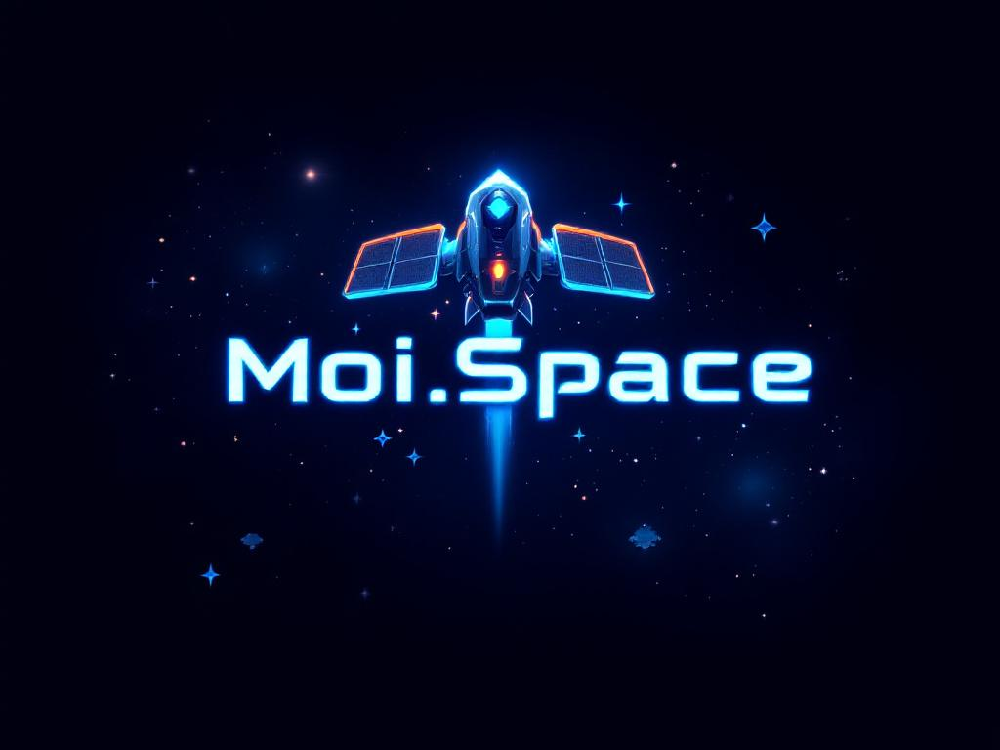

LIKOUANGA CLOTAIRE MARTHIN
Étudiant BTS SIO - ITIC Paris
PRÉSENTATION
Étudiant en BTS SIO à ITIC Paris 📚, je suis actuellement à la recherche d'une alternance à partir de septembre 2025. Passionné par le développement informatique et le Design, je m'épanouis dans la création et l'innovation technologique.
Mon parcours académique et mes expériences professionnelles m'ont permis de développer des compétences variées, allant de la gestion de réseaux à la création d'applications no-code. Je maîtrise plusieurs langages de programmation et outils, et je suis toujours avide d'apprendre et de me perfectionner.
☀️ Le succès, c'est comme le soleil ☀️ : il brille pour ceux qui savent le chercher.
Je suis déterminé à illuminer mon avenir professionnel avec la même passion et la même énergie que je mets dans chacun de mes projets.
MES SOFT SKILLS
Intelligence émotionnelle
Je suis quelqu'un d'empathique, sympathique et toujours optimiste, ce qui me permet de bien comprendre et interagir avec les autres.
Intelligence relationnelle
J'ai un esprit d'équipe et j'agis toujours pour maintenir une coopération positive, favorisant ainsi un environnement de travail harmonieux.
Curiosité
J'aime toujours en apprendre plus sur tous les sujets, ce qui me motive à explorer et à découvrir de nouvelles connaissances.
Ponctualité & gestion du temps
Je suis ponctuel et je gère bien mon temps, ce qui me permet d'être efficace et fiable dans mes engagements.
Capacité de résolution
J'aime trouver la solution la plus simple pour répondre à un besoin, que ce soit seul ou en équipe, en cherchant toujours l'efficacité et la simplicité.
Créativité
J'ai un esprit créatif et j'aime innover, que ce soit dans le développement de projets ou dans la résolution de problèmes.
MES STAGES & EXPÉRIENCES

Stage Développement Web
Juin 2024 - Août 2024 • Entreprise Tech

Stage Administration Réseau
Janvier 2024 - Mars 2024 • IT Solutions

Alternance Recherchée
Septembre 2025 • Recherche en cours
💡 Cliquez sur une carte pour voir les détails de l'expérience. Cette section sera mise à jour régulièrement.
MES PASSIONS
Basketball
Une passion pour ce sport dynamique qui me permet de rester actif et de développer un esprit d'équipe.
Formule 1
L'amour de la vitesse et de la technologie de pointe qui rend chaque course captivante.
Échecs
Un jeu de stratégie qui stimule la réflexion et améliore la concentration.
Documentaires
Explorer des sujets variés et apprendre sur le monde à travers des récits visuels captivants.
Montage vidéo
Créer des histoires et des présentations visuelles qui captent l'attention et transmettent des messages.
Musique
Exprimer la créativité et les émotions à travers la composition et la production musicale.